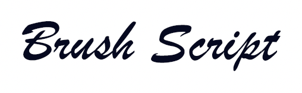

Font Types Article.
Understanding Font Types: A Guide to Choosing the Right Typeface.
Typography plays a crucial role in design, shaping the way we perceive written content. Typefaces, often confused with fonts, set the tone and feel of a project. Each typeface, whether it’s a traditional serif, a clean sans-serif, or a whimsical decorative style, brings its unique aura to a design. One of the most important aspects of typography is Font Types, which determine the overall look and feel of text. Choosing the right font can enhance readability, establish brand identity, and create visual impact. This allow designers to convey specific emotions, and to guide reader's attention through a design. In this article, we'll explore the major font categories, their characteristics, and when to use them.
Serif Fonts.
Serif fonts are distinguished by the small decorative strokes (serifs) at the ends of letters. These fonts have a classic and formal appearance, often associated with print media like books and newspapers.
Examples: Times New roman, Georgia, Garamond.
Best used for:
- Printed materials (books, magazines).
- Formal documents.
- High-end branding.
Here is one of many websites where you can search, find, and download many types of fonts from many different typefaces:
MyFonts.comSans-Serif Fonts.
Sans-serif fonts are a type of typeface that lack the small decorative strokes (serifs) at the ends of letters, giving them a sleek, clean, and modern appearance. The term "sans-serif" comes from the French word "sans," meaning "without," and "serif," referring to the small embellishments found in serif fonts.
Characteristics of Sans-Serif Fonts:
- Clean and Simple – Since they lack serifs, sans-serif fonts have a more streamlined and contemporary look.
- Highly Readable on Screens – The simplicity of sans-serif fonts makes them ideal for digital displays, where extra embellishments can cause visual clutter.
- Versatile – These fonts can be used in both formal and casual contexts, making them a great choice for branding, websites, and corporate designs.
- Minimalist and Modern Feel – Their geometric and uniform letterforms give off a modern, forward-thinking vibe.
Examples of Sans-Serif fonts: Helvetica, Futura, Open Sans:
You can visit another website where you can find these types of fonts:
Google FontsScript Fonts: Elegance and Expressiveness in Typography.
Script fonts are a type of typeface designed to mimic handwriting and calligraphy, giving text an elegant, decorative, and often artistic appearance. These fonts are commonly used in design projects that require a personal, sophisticated, or creative touch. The history of script fonts includes medieval calligraphy, Renaissance cursive, and 20th century Art Nouveau and Art Deco. Script typefaces have evolved rapidly in the second half of the 20th century due to developments in technology and the end of widespread use of metal type. Historically, most signwriting on logos, displays and shop frontages did not use fonts but was rather custom-designed lettering created by signpainters and engravers.
Characteristics of Script Fonts:
- Connected or Flowing Letterforms – Many script fonts feature letters that connect to each other, resembling cursive handwriting.
- Ornate and Decorative – Script fonts often include swashes, flourishes, and loops that add an artistic flair.
- Varied Stroke Widths – Many script fonts have strokes that vary in thickness, mimicking how a calligraphy pen or brush applies pressure.
- Elegant and Expressive – These fonts often evoke emotions such as romance, sophistication, and creativity.
- Not Ideal for Large Blocks of Text – Due to their intricate details, script fonts can be difficult to read in long paragraphs, making them best suited for headlines, logos, or short phrases.
Examples of Script fonts: Brush Script, Luminari, French Script:
Here is another source for fonts:
Adobe FontsDecorative (Display) Fonts: Bold, Unique, and Attention-Grabbing:
Decorative fonts are unique, artistic, and often elaborate. Also known as display fonts, are a category of typefaces designed to be eye-catching and expressive. Unlike serif or sans-serif fonts, which focus on readability and versatility, decorative fonts are intended for artistic and stylistic impact. They are commonly used in headlines, posters, logos, advertisements, and branding, where making a strong visual statement is essential.
Characteristics of Decorative Fonts:
- Highly Stylized Designs – Decorative fonts often feature unique shapes, textures, shadows, and embellishments, making them stand out.
- Not Designed for Body Text – Due to their elaborate details, they are typically not used for long passages of text, as they can be hard to read at small sizes.
- Strong Personality & Mood – Each decorative font conveys a distinct emotion, theme, or era, making them popular in branding and thematic designs.
- Diverse & Creative – This category includes a wide variety of hand-drawn, futuristic, vintage, grunge, and artistic fonts.
- Works Best at Large Sizes – These fonts are optimized for headlines, signage, and display purposes, where their intricate details can be fully appreciated.
Examples of Decorative Fonts: Brushberry Script, Gabriella Heavy, Phosphate:
Website for Fonts:
FONTSPACEMonospace Fonts: Precision and Uniformity in Typography.
Monospace fonts have characters that occupy the same width, giving a mechanical, typewriter-like appearance. These fonts are a category of typefaces where every character occupies the same amount of horizontal space. Unlike proportional fonts, where letters like "i" take up less space than "w," monospace fonts ensure that all characters align perfectly, making them highly useful for certain applications..
Key Characteristics of Monospace Fonts:
- Uniform Spacing – Each character, whether a narrow "I" or a wide "M," takes up the same amount of horizontal space.
- Easily Readable in Coding & Data Entry – The consistent spacing makes it easier to distinguish individual characters, reducing misinterpretation in programming or data processing.
- Classic Typewriter Aesthetic – Many monospace fonts mimic the look of old-fashioned typewriters.
- Better Alignment in Text-Based Interfaces – Since all characters align perfectly, monospace fonts are ideal for terminal displays, command lines, and tabular data.
- Used in Printing & Documentation – These fonts are often used for printing machine-readable text, such as barcodes or serial numbers.
Popular Monospace Fonts: Courier New, Menlo, Source Code:
This is another website where you can download fonts from:
FONTSquirrelChoosing the Right Font Type.
When selecting a font, consider the following:
- Purpose: Is it for print, digital, or branding?
- Readability: Will the audience easily understand the text?
- Tone: Does the font match the message and emotion of the content?
By understanding different font types and their applications, you can make informed design choices that enhance readability and aesthetics. The right typography can transform a simple text into a powerful visual statement!